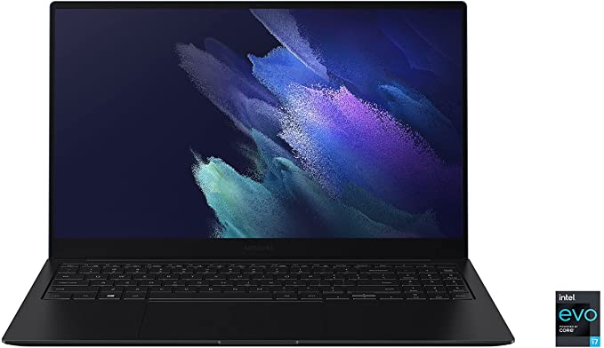
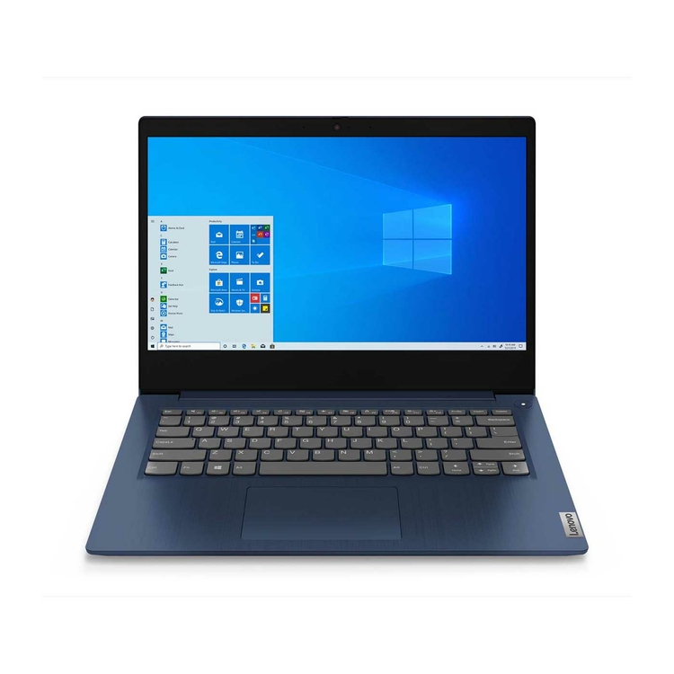
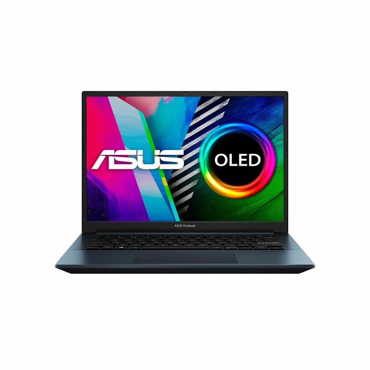
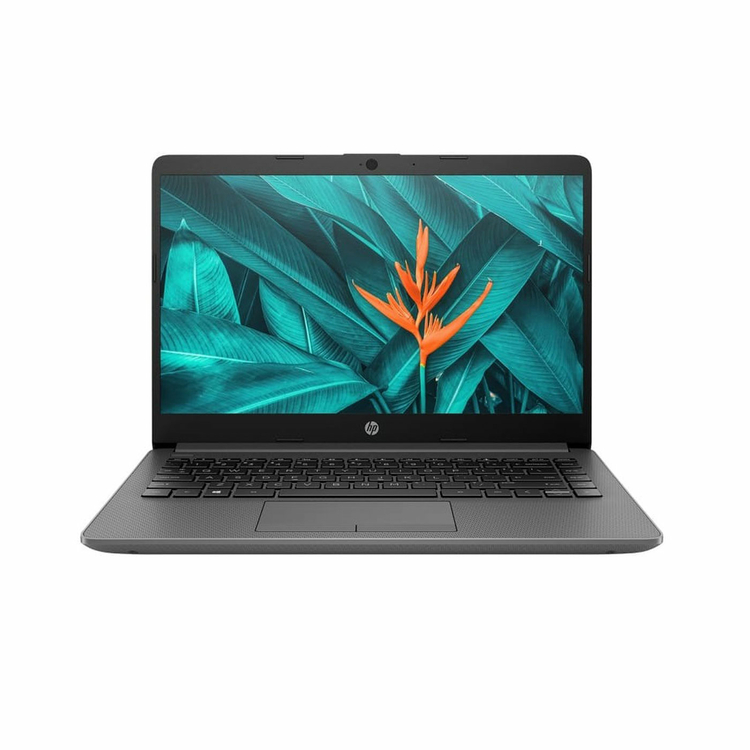
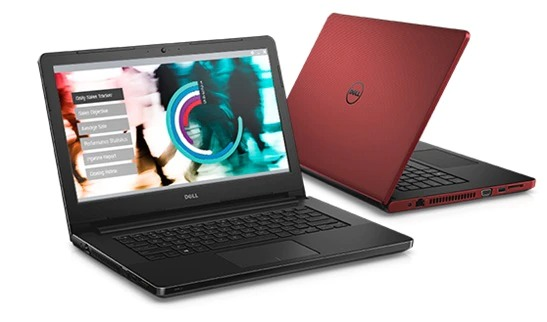

Informacion de los portatiles
Ir al menú principal
Ir a informacion de la empresa
Ir a formulario del producto
Ir a la pagina de la universidad de cartagena

Samsung
La computadora laptop Galaxy Book más liviana: elegante, ultra fina y disponible en un elegante diseño de doble color, Galaxy Book Pro es el Chrome Book más ligero para que nada te detenga.

lenovo
Encuentra todo el rendimiento que necesitas en el portátil LENOVO IdeaPad 3.Un portátil accesible, pero con todo lo que necesitas, El ideapad 3 es el portátil perfecto para tus tareas diarias, de la mano con un diseño extraordinario, este equipo superará tus expectativas. Asimismo, te brindará un entretenimiento superior gracias a su sonido Dolby Audio te sentirás seguro gracias a su obturador de privacidad en su cámara, cuando termines tus reuniones o videollamadas solo tienes que cerrar el obturador. Aprovecha ¡lleva el tuyo ahora!

Asus
ASUS Vivobook Pro 14 OLED con Windows 11 expresa tu visión. Sumérgete en verdaderos colores, con su vívida e impresionante pantalla NanoEdge de 14" 2.8K OLED superbrillante (hasta 600 nits), validada por PANTONE y certificado por TÜV Rheinland y su impresionante audio certificado por Harman Kardon. Además, cuenta con la última generación de Intel de 11a generación de la serie H con gráficos Intel Iris Xe y un sistema de enfriamiento de doble ventilador, peso ultra ligero de 1,4Kg y con WiFi 6 ultrarrápido. El Vivobook Pro 14 OLED ultra elegante es la clave para expresar su verdadero potencial.

HP
Gran desempeño. Diseñado para la movilidad! Delgado y ultraportátil con una batería de larga duración para seguir siendo sociable y productivo, y mantenerse conectado. Es fácil de transportar, cuenta con una pantalla con microborde y bisel ultrafino que se traduce en un mayor campo de visión en pantalla con un marco más pequeño. Rendimiento y capacidad de respuesta confiables. Almacena y sincroniza tu contenido en línea con Dropbox, obtén 25 GB de almacenamiento por un año para acceder, gestionar y compartir tus fotos, música y archivos desde cualquier lugar con acceso a Internet.

Dell
Domine la productividad con las características esenciales que incluyen procesadores de vanguardia para garantizar un rendimiento más rápido; pantallas antirreflejo para una visualización sencilla; múltiples puertos (incluidos los puertos heredados) para conectar fácilmente todos los dispositivos; y Gigabit Ethernet de alta velocidad. Todo esto en un diseño profesional, delgado y ligero para una movilidad sin problemas.
Integrantes: Jose Alberto Uhia Garcia y Samuel Garrido Gamarra